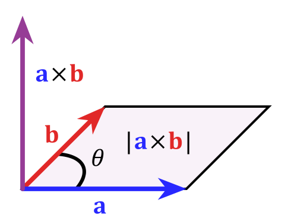
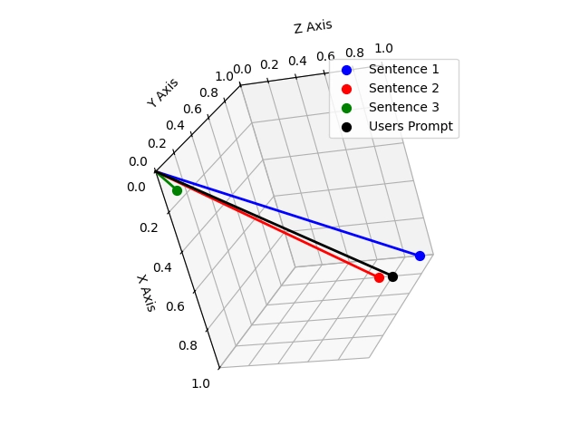
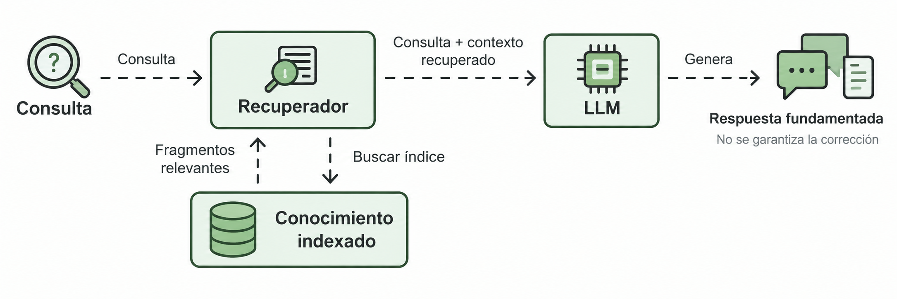

Producto interior, norma, ángulos y aplicaciones
Objetivos de la clase
En esta clase estudiaremos los vectores en R^n y las operaciones que permiten medir longitudes, ángulos y direcciones. Al finalizar, el estudiante deberá ser capaz de:
- Representar y operar vectores en R^2, R^3 y R^n.
- Calcular e interpretar el producto interior.
- Determinar la norma, el ángulo y los vectores unitarios.
- Calcular la proyección de un vector sobre otro y descomponer ortogonalmente.
- Aplicar el producto cruz en R^3.
- Reconocer estas herramientas en aplicaciones de computación y en RAG.
Vectores en Rn
Un vector en R^n es una n-upla ordenada de números reales: u=(u_1,u_2,\dots,u_n), \qquad u_i\in R. Por lo tanto, R^n=\{(u_1,u_2,\dots,u_n): u_i\in R\}. Ejemplos:
- (2,-1)\in R^2.
- (1,0,3)\in R^3.
- (2,-1,4,0,5)\in R^5.
Operaciones entre vectores
Sean u=(u_1,\dots,u_n) y v=(v_1,\dots,v_n). La suma se define componente a componente: u+v=(u_1+v_1,\dots,u_n+v_n), y la multiplicación por escalar, con \lambda\in R: \lambda u=(\lambda u_1,\dots,\lambda u_n).
Clausura
Si u,v\in R^n, entonces u+v\in R^n; y si \lambda\in R, entonces \lambda u\in R^n. Las operaciones producen nuevamente elementos del mismo conjunto. Esta idea será fundamental al estudiar espacios vectoriales.
Aplicaciones
Un vector puede almacenar múltiples cantidades simultáneamente. Por ejemplo, x=(x_1,x_2,\dots,x_n) puede representar:
- mediciones de sensores;
- velocidades o fuerzas;
- señales discretizadas;
- características de un conjunto de datos;
- estados de un sistema dinámico;
- parámetros de un modelo.
En informática, esta última interpretación es central: un texto, una imagen o un usuario se representan mediante un vector de características o embedding.
Producto interior o producto punto
Sean u=(u_1,\dots,u_n) y v=(v_1,\dots,v_n). El producto interior en R^n se define como u\cdot v=u_1v_1+\dots+u_nv_n=\sum_{i=1}^{n}u_i v_i. El resultado del producto punto es un número real, no un vector.
Ejemplo
Para u=(3,-1,2) y v=(1,4,-2): u\cdot v=3(1)+(-1)(4)+2(-2)=3-4-4=-5.
Propiedades del producto interior
Para u,v,w\in R^n y \lambda\in R:
- u\cdot v=v\cdot u (conmutatividad).
- u\cdot(v+w)=u\cdot v+u\cdot w (distributividad).
- (\lambda u)\cdot v=\lambda(u\cdot v) (homogeneidad).
- u\cdot u\ge 0, y u\cdot u=0 \iff u=0 (positividad definida).
Ejercicio 1
Sean u=(3,1,-2), \qquad v=(2,-3,4). Realice cada uno de los siguientes pasos:
- Calcule u+v.
- Calcule 3u-2v.
- Calcule u\cdot v.
Suma
u+v=(3+2,\,1+(-3),\,-2+4)=(5,-2,2).
Combinación lineal
3u-2v=3(3,1,-2)-2(2,-3,4)=(9,3,-6)-(4,-6,8)=(5,9,-14).
Producto punto
u\cdot v=3(2)+1(-3)+(-2)(4)=6-3-8=-5.
Ortogonalidad
Dos vectores no nulos son ortogonales si forman un ángulo de 90^\circ. Algebraicamente, u\perp v \iff u\cdot v=0.
Ejemplo
Para u=(3,2) y v=(-2,3): u\cdot v=3(-2)+2(3)=0, por lo tanto u\perp v.
Ejercicio 2
Determine el valor de k para que u=(2,k,1), \qquad v=(1,-3,4) sean ortogonales.
Imponemos la condición de ortogonalidad u\cdot v=0: u\cdot v=2(1)+k(-3)+1(4)=2-3k+4=6-3k=0. Despejamos: 3k=6 \implies k=2.
Norma de un vector
La norma o magnitud de un vector u se define a partir del producto interior: \|u\|=\sqrt{u\cdot u}. Si u=(u_1,\dots,u_n), entonces \|u\|=\sqrt{u_1^2+\dots+u_n^2}.
Ejemplo
Para u=(-2,3,6): \|u\|=\sqrt{(-2)^2+3^2+6^2}=\sqrt{4+9+36}=\sqrt{49}=7.
Propiedades de la norma
Para u\in R^n y \lambda\in R:
- \|u\|\ge 0.
- \|u\|=0 \iff u=0.
- \|\lambda u\|=|\lambda|\,\|u\|.
- \|u+v\|\le \|u\|+\|v\| (desigualdad triangular).
La norma mide la longitud del vector y también la distancia entre dos puntos: \|u-v\|.
Vectores unitarios y normalización
Un vector u es unitario si \|u\|=1. Si u\neq 0, se puede obtener un vector unitario con la misma dirección mediante \hat{u}=\dfrac{u}{\|u\|}. A este proceso se le llama normalización.
Ejemplo
Para u=(5,12), su norma es \|u\|=\sqrt{5^2+12^2}=13. Entonces \hat{u}=\dfrac{1}{13}(5,12)=\left(\dfrac{5}{13},\dfrac{12}{13}\right).
Al normalizar, la dirección y el sentido permanecen iguales; la magnitud se transforma en 1.
Ángulo entre dos vectores
Para dos vectores no nulos, u\cdot v=\|u\|\,\|v\|\cos\theta. Por lo tanto, \cos\theta=\dfrac{u\cdot v}{\|u\|\,\|v\|}, \qquad 0\le\theta\le\pi.
El signo del producto punto clasifica el ángulo sin calcularlo:
- u\cdot v>0 \implies \cos\theta>0 \implies \theta<90^\circ (agudo).
- u\cdot v=0 \implies \theta=90^\circ (recto).
- u\cdot v<0 \implies \cos\theta<0 \implies \theta>90^\circ (obtuso).
Ejercicio 3
Sean u=(2,1,-3), \qquad v=(1,-1,2). Sin calcular explícitamente el ángulo, determine si es agudo, recto u obtuso.
Calculamos el producto punto: u\cdot v=2(1)+1(-1)+(-3)(2)=2-1-6=-5. Como u\cdot v<0, el ángulo es obtuso.
Ejercicio 4
Sean u=(2,2,0), \qquad v=(0,3,3). Calcule el ángulo entre los vectores.
Calculamos el producto punto y las normas: u\cdot v=2(0)+2(3)+0(3)=6, \|u\|=\sqrt{2^2+2^2+0^2}=2\sqrt{2}, \qquad \|v\|=\sqrt{0^2+3^2+3^2}=3\sqrt{2}. Entonces \cos\theta=\dfrac{u\cdot v}{\|u\|\|v\|}=\dfrac{6}{(2\sqrt{2})(3\sqrt{2})}=\dfrac{6}{12}=\dfrac{1}{2}, por lo tanto \theta=\arccos\left(\dfrac{1}{2}\right)=60^\circ.
Proyección de un vector
La proyección de u sobre v representa la componente de u en la dirección de v.
- Proyección escalar: \operatorname{comp}_v u=\dfrac{u\cdot v}{\|v\|}.
- Proyección vectorial: \operatorname{proj}_v u=\dfrac{u\cdot v}{v\cdot v}\,v.
Ejemplo
Para u=(4,3) y v=(2,-1) tenemos u\cdot v=5 y v\cdot v=5, entonces \operatorname{proj}_v u=\dfrac{5}{5}(2,-1)=(2,-1).
Descomposición ortogonal
Todo vector u puede descomponerse respecto de una dirección v como u=\operatorname{proj}_v u+(u-\operatorname{proj}_v u). La segunda componente es ortogonal a v: (u-\operatorname{proj}_v u)\cdot v=0.
Esto separa u en una parte paralela a v y una parte perpendicular a v.
Ejercicio 5
Sean u=(3,5), \qquad v=(1,2). Realice cada uno de los siguientes pasos:
- Calcule \operatorname{proj}_v u.
- Determine w=u-\operatorname{proj}_v u.
- Compruebe que w\cdot v=0.
Proyección
Calculamos u\cdot v=3(1)+5(2)=13 y v\cdot v=1^2+2^2=5: \operatorname{proj}_v u=\dfrac{13}{5}(1,2)=\left(\dfrac{13}{5},\dfrac{26}{5}\right).
Componente ortogonal
w=u-\operatorname{proj}_v u=(3,5)-\left(\dfrac{13}{5},\dfrac{26}{5}\right)=\left(\dfrac{2}{5},-\dfrac{1}{5}\right).
Comprobación
w\cdot v=\dfrac{2}{5}(1)+\left(-\dfrac{1}{5}\right)(2)=\dfrac{2}{5}-\dfrac{2}{5}=0.
Producto cruz en R3
El producto cruz se define, en este curso, para vectores de R^3. Sean u=(u_1,u_2,u_3) y v=(v_1,v_2,v_3). Se define mediante el determinante simbólico u\times v=\begin{vmatrix}\mathbf{i}&\mathbf{j}&\mathbf{k}\\ u_1&u_2&u_3\\ v_1&v_2&v_3\end{vmatrix}. Equivalentemente, u\times v=(u_2v_3-u_3v_2,\; u_3v_1-u_1v_3,\; u_1v_2-u_2v_1). El resultado es un vector de R^3 y cumple (u\times v)\perp u y (u\times v)\perp v.
Propiedades del producto cruz
Para u,v,w\in R^3:
- u\times v=-(v\times u) (anticommutatividad).
- u\times u=0.
- u\times(v+w)=u\times v+u\times w (distributividad).
- u\times v=0 si y solo si los vectores son paralelos.
Interpretación geométrica del producto cruz
Se cumple que \|u\times v\|=\|u\|\,\|v\|\sin\theta. Por lo tanto,
- A_{\text{paralelogramo}}=\|u\times v\|, el área del paralelogramo generado por u y v;
- A_{\triangle}=\dfrac{1}{2}\|u\times v\|, el área del triángulo correspondiente.

Ejemplo
Para u=(2,1,0) y v=(1,-1,3): u\times v=(3,-6,-3). Comprobamos la perpendicularidad: (u\times v)\cdot u=3(2)+(-6)(1)+(-3)(0)=0, (u\times v)\cdot v=3(1)+(-6)(-1)+(-3)(3)=0.
Ejercicio 6
Sean u=(3,1,-2), \qquad v=(2,-1,1). Realice cada uno de los siguientes pasos:
- Calcule u\times v.
- Verifique que el resultado es perpendicular a ambos vectores.
- Determine el área del paralelogramo generado por u y v.
Producto cruz
u\times v=(1(1)-(-2)(-1),\,(-2)(2)-(3)(1),\,(3)(-1)-(1)(2))=(-1,-7,-5).
Perpendicularidad
(u\times v)\cdot u=(-1)(3)+(-7)(1)+(-5)(-2)=-3-7+10=0, (u\times v)\cdot v=(-1)(2)+(-7)(-1)+(-5)(1)=-2+7-5=0.
Área
A=\|u\times v\|=\sqrt{(-1)^2+(-7)^2+(-5)^2}=\sqrt{1+49+25}=\sqrt{75}=5\sqrt{3}\approx 8{,}66.
Similitud coseno
En computación, dos elementos se representan mediante vectores (embeddings) y se comparan con el coseno del ángulo entre ellos: \text{sim}(u,v)=\cos\theta=\dfrac{u\cdot v}{\|u\|\,\|v\|}=\dfrac{\operatorname{comp}_v u}{\|u\|}. Es decir, la similitud coseno es la proyección escalar normalizada. Como |\cos\theta|\le 1, se tiene \text{sim}(u,v)\in[-1,1]:
- valores cercanos a 1 indican vectores alineados (muy similares);
- valores cercanos a 0, vectores ortogonales (sin relación);
- valores cercanos a -1, vectores opuestos.
Idea clave
Si los vectores están normalizados, \|u\|=\|v\|=1, entonces \text{sim}(u,v)=u\cdot v: basta el producto punto.
Aplicación: búsqueda semántica
La búsqueda tradicional compara palabras exactas. La búsqueda semántica compara significado:
- Cada documento o fragmento se convierte en un embedding, un vector en R^n.
- La consulta del usuario también se convierte en un vector.
- Se calcula la similitud coseno entre la consulta y cada documento.
- Se ordenan los documentos de mayor a menor similitud y se devuelven los primeros.
Esto convierte un problema de lenguaje en un problema geométrico: los vectores cercanos en dirección representan contenidos parecidos. La normalización permite precalcular normas y reducir el costo de cada comparación.
Aplicación: RAG (Retrieval-Augmented Generation)
Un modelo de lenguaje puede “alucinar” cuando responde sin fuentes. RAG combina un recuperador vectorial con un generador:
- Indexación: se divide la base de conocimiento en fragmentos y cada fragmento se codifica como embedding.
- Recuperación: la consulta se codifica y se compara con todos los fragmentos usando similitud coseno; se conservan los k mejores.
- Aumento: los fragmentos recuperados se insertan en el contexto del prompt.
- Generación: el modelo genera la respuesta a partir de ese contexto.
El paso de recuperación es puramente álgebra lineal: producto interior, norma y coseno. Sin estas operaciones no habría forma de decidir qué documentos son relevantes.



Ejemplo: recuperación por similitud coseno
Supongamos que la consulta es q=(1,2,0) y que la base contiene tres fragmentos: d_1=(2,1,0), \qquad d_2=(0,1,1), \qquad d_3=(1,0,1). Calculamos la similitud coseno de q con cada uno:
- \|q\|=\sqrt{5}.
- Con d_1: q\cdot d_1=4 y \|d_1\|=\sqrt{5}, entonces \cos\theta_1=\dfrac{4}{\sqrt{5}\sqrt{5}}=\dfrac{4}{5}=0{,}8.
- Con d_2: q\cdot d_2=2 y \|d_2\|=\sqrt{2}, entonces \cos\theta_2=\dfrac{2}{\sqrt{5}\sqrt{2}}=\dfrac{2}{\sqrt{10}}\approx 0{,}63.
- Con d_3: q\cdot d_3=1 y \|d_3\|=\sqrt{2}, entonces \cos\theta_3=\dfrac{1}{\sqrt{10}}\approx 0{,}32.
El orden de relevancia es d_1>d_2>d_3.
Si el número de documentos recuperados máximos fuera k=2, el sistema recuperaría d_1 y d_2 para aumentar el prompt.